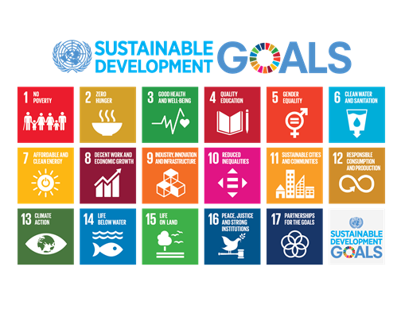
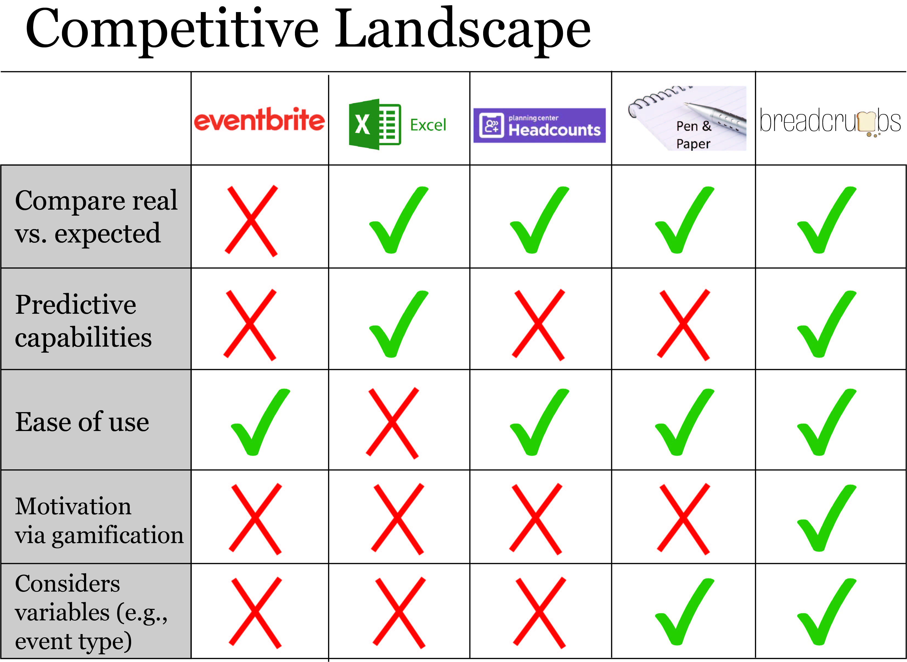
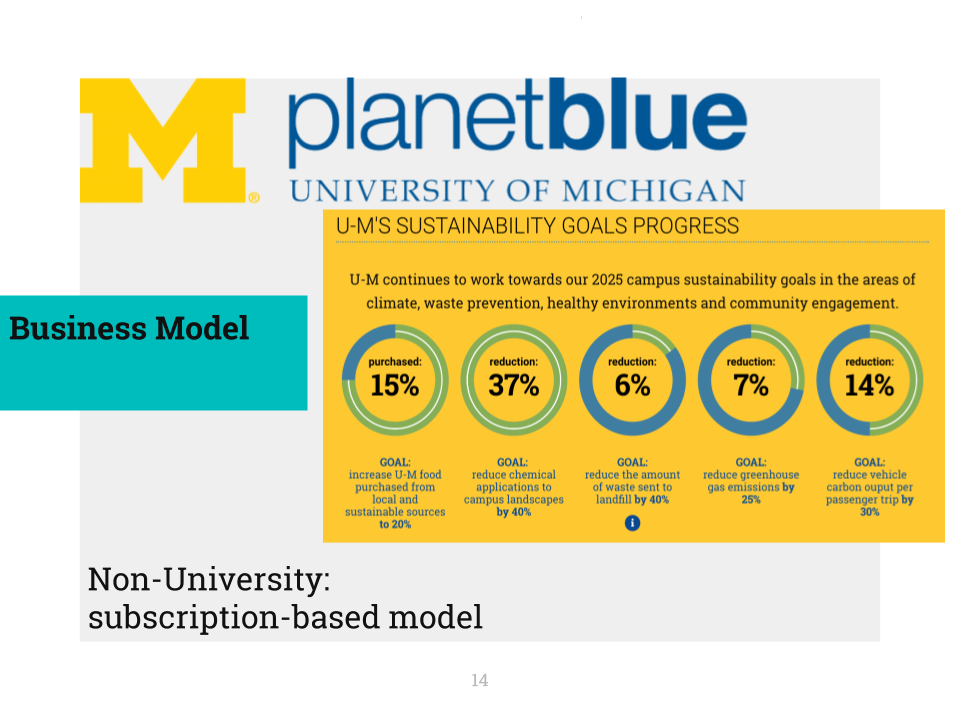

Overview
Format: Over the course of five months, students work in multidisciplinary teams to create solutions to major social problems. Each team chooses to tackle a challenge related to the UN Sustainable Development Goals. The competition culminates in a final presentation and pitch.
My role: Researcher and Designer
The Challenge: Combat food waste on campus, working toward the UN Sustainable Development Goal of Sustainable Cities and Communities.
Problem Space
To best address this challenge, we first identified key players and environmental conditions that impact the problem space. We created the pictured ecosystem map while exploring the issues around food waste, and we were able to compile a list of potential interviewees from this process to gather more information about our focus area.
Interviews
My team conducted a series of interviews with student organizations, University-affiliated campus offices, and community organizations such as food banks to gain several different perspectives on the problem at hand. Based on these interviews, we found that the following issues contributed to food waste on campus:
- Students frequently rely on institutional knowledge (e.g., how much food was ordered in past years) to figure out headcount calculations when ordering food. However, turnover in student organizations due to graduation often causes this information to be lost.
- Food transportation challenges were major contributors to campus food waste. Some students we spoke with also mentioned stigma related to food insecurity as a barrier to taking post-event leftovers.
- Inaccurate headcount was the greatest challenge facing student organizers. Organizers frequently receive far more "yes" RSVPs than actual attendees at events, and our interviewees found it difficult to plan around this.
We realized that there were several ways we could approach this problem and eventually settled on tackling this issue from the supply side. From our conversations with campus offices and community organizations, we learned that there were several initiatives already in place to connect students with leftovers and promote food rescue. However, most programs in place focused on dealing with leftovers after food had already been ordered - there were few products available to prevent excess ordering on the front end.
Product Development
To deal with food waste from the supply side, we identified three core user needs:
- Reconcile discrepancy between headcount and RSVP numbers;
- Prevent institutional knowledge from being lost and make this easier to access;
- Help educate students about campus initiatives that can help them to host zero-waste events.
To meet these needs, we began to wireframe and prototype a planning tool, titled Breadcrumbs, that could predict headcounts for events based on historical data. Our primary aim was to alleviate the discrepancy between headcounts and RSVP numbers, but we also added educational resources and a social gamification component both to increase motivation to use the tool and to help students share institutional knowledge amongst themselves.
We conducted a cursory competitive analysis of other products related to event planning in order to gauge how well other products satisfied these needs. From there, we were able to tweak our product to ensure that it provided a unique experience while meeting core user needs. Pictured is the final competitive analysis from our pitch deck.
Pitching
At the end of our five-month journey researching and designing Breadcrumbs, we presented our product to a panel of judges at the Innovation in Action Final Showcase. Pictured is a slide from our final deck that addresses our potential business model. After multiple rounds of practice pitches and incorporating this feedback into our product and pitch, we took the stage for 14 minutes of presentation and Q&A.
Discussion
This was a great opportunity to work on a side project with a design focus. The Innovation in Action staff could not have been more supportive, and I learned to integrate my design process with entrepreneurship principles. Through the workshops, I learned about start-up law and developing a business model - it was definitely a valuable experience to gain a multidisciplinary perspective on product development. Additionally, I learned a great deal about how to craft a compelling pitch. It was an honor to work alongside teams tackling some of society's toughest challenges.